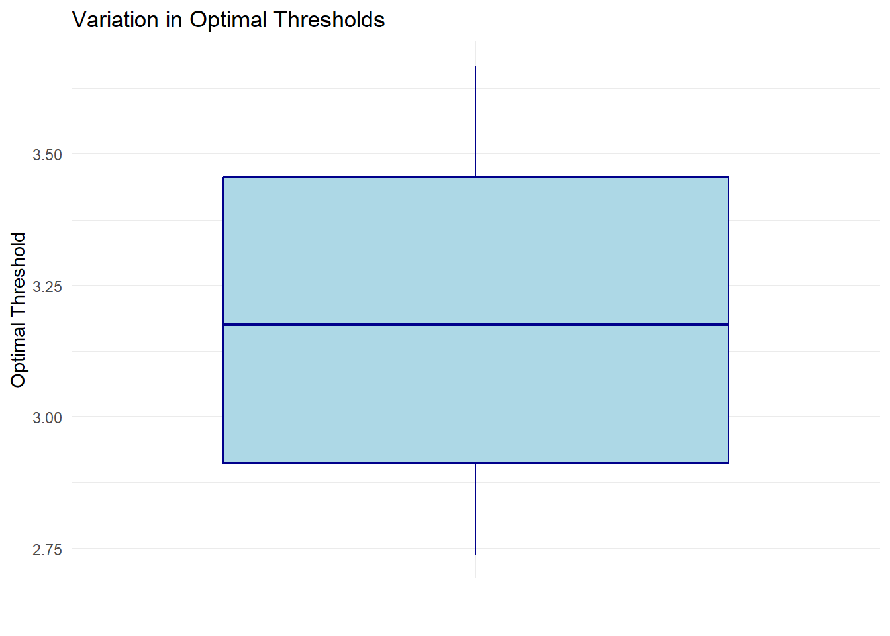

How far can you really see the drone?
Introduction
Maintaining visual line of sight (VLOS) of a drone is a fundamental requirement under 14 CFR Part 107, which governs the commercial use of small unmanned aircraft systems (sUAS) in the United States. According to these regulations, drone pilots (or their visual observers) must always be able to see their aircraft unaided by any device other than corrective lenses. This requirement serves as a critical safety measure: by keeping the drone in sight, operators can better avoid collisions with buildings, power lines, or other aircraft, and can respond more quickly to unexpected events or emergencies.
In practical terms, “visual line of sight” means that the operator or observer can clearly identify the drone’s orientation and location in real time. While this may sound straightforward, factors such as distance, weather conditions, obstacles, and lighting can all compromise VLOS. Consequently, ensuring VLOS compliance across varying operational scenarios is not always a simple task.
Despite its importance, relatively little research has been dedicated to developing systematic methods to estimate or verify VLOS. Most current industry practices rely on manual observation and conservative flight planning to ensure the drone remains within sight, but these approaches can be subjective and prone to human error.
Understanding Visual Line of Sight
Under the Federal Aviation Administration’s (FAA) regulations, particularly 14 CFR Part 107, the concept of visual line of sight (VLOS) is defined to ensure that the remote pilot or visual observer maintains constant, unaided visual contact with the small unmanned aircraft (sUA) throughout its operation. This requirement is critical for safe flight, as it allows the operator to continuously monitor the drone’s position, orientation, and potential conflicts in the airspace.
14 CFR § 107.31 (“Visual line of sight aircraft operation”) specifies that the remote pilot in command (PIC) or the person manipulating the flight controls, as well as any visual observer (if used), must be able to observe the sUA:
Unaided by any device other than corrective lenses. This prohibition on visual aids (e.g., binoculars, night vision goggles, or first-person view cameras alone) ensures that the aircraft can be seen in real time and in natural lighting conditions.
Continuously throughout the entire flight. This means that at no point should the operator lose sight of the drone due to distance, obstacles, or environmental factors (e.g., clouds, fog, glare).
With sufficient clarity to:
- Know the sUA’s location (e.g., latitude, longitude, or general position in the environment).
- Determine its altitude, attitude, and direction of flight.
- See and avoid other air traffic or hazards.
- Confirm that the sUA does not endanger the life or property of others.
In October 2024, the European Union Aviation Safety Agency (EASA) published guidelines on operations in the open and specific category (Issue 2, 04 October 2024) to supplement EU drone regulations. Included in the guidelines are calculates for ALOS and DLOS.
Attitude Line of Sight (ALOS)
ALOS represents the maximum distance at which the remote pilot can reliably determine the drone’s orientation (i.e., its pitch, roll, and yaw). The value depends on the drone’s size and differs by aircraft type. For example:
- Rotorcraft/multirotor: \(ALOS = 327 × (CD) + 20 m\)
- Fixed-wing: \(ALOS = 490 × (CD) + 30 m\)
Where the characteristic dimension (CD) is typically the drone’s largest measurable span (e.g., wingspan, diagonal motor-to-motor distance, etc.).
Detection Line of Sight (DLOS)
DLOS defines how far away the drone can be while still allowing the pilot to detect potential collisions or conflicts in the surrounding airspace. DLOS is a function of ground visibility (GV), given by:
\[DLOS = 0.3 × GV\] Since ground visibility should be at least 5 km for most VLOS operations, DLOS adjusts based on environmental conditions such as haze, fog, or rain.
To determine an overall VLOS distance, take the smaller of the two values (ALOS or DLOS) to ensure both the drone’s orientation and any incoming hazards remain visible to the remote pilot.
Modeling Visual Range
A core principle in assessing the maximum range at which an unmanned aircraft can be visually tracked is the concept of visual acuity, often approximated as the ability to distinguish details that subtend an angle of roughly one arc minute (1/60 of a degree, or 00° 01′ 00″) at the eye. Under standard conditions, an individual with “normal” vision (commonly referred to as 20/20 in the United States) can discern details at this resolution. For an individual with “normal” vision, the height of every letter on the Snellen Eye Chart (Figure 1) on the 20/20 row corresponds to 5 arc minutes (5′) when viewed at 20 ft. The angle subtended by the opening of the letter C to differentiate between the letter O is drawn to be exactly one arc minute.
However, drone operations require not only detection of the aircraft as a point in space, but also recognition of its orientation and possible identification of flight-critical details (e.g., changes in attitude or lights). To incorporate both practical and safety considerations, we propose the following angular thresholds:
This is the conventional “benchmark” for human visual acuity in ideal conditions. If a drone appears smaller than this angular size, the average observer will struggle to distinguish it from the background or discern fine details such as its orientation.
Recognizing that real-world conditions (e.g., lighting, contrast, visual distractions) are rarely ideal, our model sets 3 arc minutes as the angular size at which the drone can be more reliably perceived and tracked. At this threshold, observers should be able to identify major orientation changes (e.g., a significant turn, climb, or descent), aiding compliance with visual line of sight (VLOS) requirements.
For critical safety operations or scenarios where the observer must rapidly respond to any change in flight status, 6 arc minutes is proposed as a practical “comfort zone.” At this size, not only is the drone’s presence and orientation clearly visible, but there is also additional margin for environmental variables (such as glare, haze, or partial obstructions).
Calculating Visual Line of Sight for Different Drone Models
The visual angle \((\theta)\) subtended by the drone’s corners can be calculated using the arc cosine function as visualized in Figure 2. The two relevant drone corners are:
\[A = \left( dis - \frac{w}{2}, alt + \frac{h}{2} \right), \quad B = \left( dis + \frac{w}{2}, alt - \frac{h}{2} \right)\] Using the arccosine formula to solve for the angle between two vectors:
\[\theta = \arccos \left( \frac{\mathbf{A} \cdot \mathbf{B}}{\|A\|\|B\|} \right) \tag{1}\]
where:
- \(dis\) = horizontal distance to the drone,
- \(alt\) = altitude of the drone,
- \(w\) = drone width,
- \(h\) = drone height,
Given a drone’s width, height, and desired , varying the altitude from 0 to 400 ft allows for solving for the estimated distance.
An example of Equation 1 for a multi-rotor drone (Autel Evo II v3) and a fixed-wing drone (AgEagle eBee) can be found below. A third panel provides the user with an interactive UI to enter in an arbitrary drone size and type for analysis.
While the EASA guidelines suggest a max visibility range of 601 ft, the use of visual acuity presents a recommended distance of no more than 850 ft with the limit of the average human’s vision at 1970 ft.
The variation is significant when comparing results for fixed-wing UAS. The EASA guidelines suggest a max visibility range of 1965 ft, the use of visual acuity presents a recommended distance of no more than 1482 ft with the limit of the average human’s vision at 2952 ft.
Methodology
Tested 4 drones
- DJI Mini 2
- Autel Evo II Pro v3
- Freefly Astro
- AgEagle eBee
For the multi-rotor drones, conducted both a vertical and horizontal test. For the eBee, only a horizontal test.
Vertical Test
- Vertical Up/Down at a measured point
Horizontal Test
- Grid Pattern or Autonomous flight at a consistent altitude
Measurement Issues
GPS can be inaccurate, timing can be inaccurate, measurements can be inaccurate.
While we strived to ensure accurate measurements, it must be noted that there may be inaccuracies.
What are the GPS accuracies? How does timing affect results?
GPS errors are independent of distance, the further away the drone is, the less it matters. Calculations are more sensitive to horizontal errors than vertical errors.
At roughly 600 ft, it’s about 0.03 arc minutes per foot. Timestamps could be off by seconds, travelling at 25 ft/sec - being off by 3 seconds could mean an inaccuracy of an arc minute or greater if travelling to/from the observer. Devices are synchronized manually prior to each flight and compared against https://www.time.gov/ for validation.
Experimental Results
Code
# Reading data from an Excel file
experimental_data <- read_excel("./data_clean.xlsx")
experimental_data <- experimental_data[experimental_data$Lat_Alt >= 10, ]
# Assuming dataclean is a data frame
acuity_score <- experimental_data$Score
altitude <- experimental_data$Lat_Alt
visibility <- experimental_data$Observation
visibility <- as.factor(visibility)
levels(visibility) <- c(0, 1) # Ensure binary levels are 0 and 1
observers <- experimental_data$ObserverVisibility by Estimated Acuity
Code
# Create bins for acuity_score
visibility_bins <- experimental_data %>%
mutate(
Bin = cut(
acuity_score,
breaks = c(seq(0, 10, by = 0.5), Inf),
right = FALSE, # Include left endpoint but exclude the right
labels = c(
paste(seq(0, 9.5, by = 0.5), seq(0.5, 10, by = 0.5), sep = "-"),
">10"
)
)
)
# Calculate percentage of visibility being TRUE for each bin
bin_summary <- visibility_bins %>%
group_by(Bin) %>%
summarise(
Total = n(), # Total number of observations in each bin
TrueCount = sum(Observation == TRUE), # Count of TRUE visibility
PercentTrue = 100 * TrueCount / Total # Percentage of TRUE visibility
)
# Display the results
p <- ggplot(bin_summary, aes(x = Bin, y = PercentTrue)) +
geom_bar(stat = "identity", fill = "lightblue", color = "darkblue") +
labs(
title = "Percentage of Self-Reported Visibility by Estimated Acuity",
x = "Acuity (arcminutes)",
y = "Percent Visibility"
) +
theme_minimal() +
theme(axis.text.x = element_text(angle = 45, hjust = 1),
legend.position = "bottom"
) +
scale_x_discrete(limits = rev(levels(bin_summary$Bin))) + # Reverse the order of bins
scale_y_continuous(limits = c(0, 100), expand = c(0, 0)) + # Extend y-axis to 100%
# Add the vertical dashed line with a legend
geom_vline(
aes(xintercept = length(levels(Bin)) - 1.5, linetype = "Threshold Line"),
color = "red",
size = 1,
show.legend = TRUE
) +
# Define linetype for the legend
scale_linetype_manual(
name = "Legend",
values = c("Threshold Line" = "dashed"),
guide = guide_legend(override.aes = list(color = "red"))
)
# Convert the ggplot to an interactive plot with plotly
interactive_plot <- ggplotly(p)
# Adjust the layout to add padding for the title
interactive_plot <- interactive_plot %>%
layout(
margin = list(t = 100), # Add 100px margin to the top
title = list(text = "<b>Percentage of Self-Reported Visibility by Estimated Acuity</b>", # Bold title
x = 0.5, # Center align the title
xanchor = "center",
yanchor = "top")
)
# Display the interactive plot
interactive_plotThe experimental results show a clear pattern of reduced self-reported visibility when the visual acuity is less than 3 arc minutes, with 0 self-reported visibility when less than 1 arc minute, roughly assumed to be the limit of human vision.
This data was evaluated with a fixed-wing drone, the AgEagle eBee.
Finding the Optimal Threshold
Using Recveiver Operator Characteristic Curve (ROC) and Youden’s Index to find the optimal thresholds. Optimal threshold is the arc minutes for a binary predictor, the area under the curve (AUC) is a measure of the predictive performance for that threshold. An AUC above 0.5 is indicative that the threshold is better than random guessing.
Code
# Get unique observers
uniqueObservers <- unique(observers)
# Initialize an empty data frame to store results
results <- data.frame(
Observer = character(),
OptimalThreshold = numeric(),
AUC = numeric(),
stringsAsFactors = FALSE
)
# Loop through each observer
for (obs in uniqueObservers) {
# Get the indices for the current observer
obsIdx <- observers == obs
# Compute ROC curve using the pROC package
roc <- roc(visibility[obsIdx], acuity_score[obsIdx], levels = c(0, 1))
AUC <- auc(roc)
# Find Optimal Threshold (Youden's Index)
youdens_index <- roc$sensitivities + roc$specificities - 1
optimalIdx <- which.max(youdens_index)
optimalThreshold <- roc$thresholds[optimalIdx]
# Store the result in the data frame
results <- rbind(results, data.frame(
Observer = obs,
OptimalThreshold = optimalThreshold,
AUC = AUC
))
}
# Print the results
print(results) Observer OptimalThreshold AUC
1 UI1 3.668683 0.7402241
2 UI2 3.385013 0.7308359
3 UI3 2.738648 0.6111218
4 UI4 2.969255 0.7222458Code
# Create a boxplot for optimal thresholds
ggplot(results, aes(x = "", y = OptimalThreshold)) +
geom_boxplot(fill = "lightblue", color = "darkblue") +
labs(
title = "Variation in Optimal Thresholds",
x = "", # No label for x-axis since it's a single group
y = "Optimal Threshold"
) +
theme_minimal()
Accounting for variations in different observers, the mean is 3.1903998 arc minutes, suggesting that 3 arc minutes is an acceptable threshold.
Running Code
When you click the Render button a document will be generated that includes both content and the output of embedded code. You can embed code like this:
Code
1 + 1[1] 2Code
d = calculateMinimumVisibility(c(4.2,11.3),50,6)
d[1] 288You can add options to executable code like this
[1] 4The echo: false option disables the printing of code (only output is displayed).